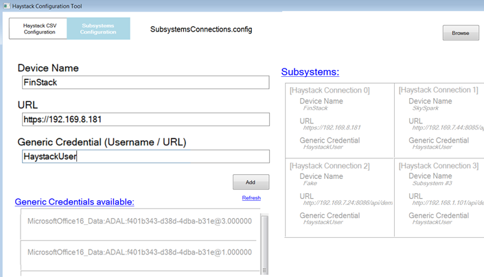
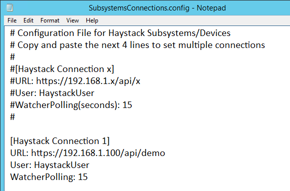

Configure the Haystack Adapter
- If not already open, start the HaystackAdapterConfigurator tool from the installation folder.
- The Haystack Configuration Tool window displays.
- On the upper side of the window, click Subsystem Configuration.

- If you have already prepared a configuration that you want to modify, proceed as follows:
- On the top right corner of the window, click Browse.
- Locate and select the SubsystemConnections.config file.
- Select Open.
- The list of configured Haystack subsystems displays on the right-hand side of the window formatted as a two-column table.
- To add a new subsystem:
- Enter the Device Name (a label).
- Enter the subsystem URL.
- Enter the Generic Credential (Username or URL) to access the subsystem, as defined above.
NOTE: The list of credentials displays in the bottom part of the window, organized in a single-column table. Click Generic Credential available to access and configure the Generic Credentials in Windows. - Click Add.
- The new subsystem is appended to the list.
- To remove a subsystem:
- Select the subsystem in the list and click Remove.
- To modify a subsystem:
- Select it and modify the parameters as necessary.
- Click Add to append a new entry.
- Click Remove to delete the old entry.
- Click Save As… to save the configuration into the SubsystemConnections.config file.
- Optionally (for expert users), click Subsystems to open the output file with Notepad. Each configured subsystem has a section that includes URL and User, as configured in the tool, and the monitoring polling frequency, which you can customize here (default is 15 sec).
[Haystack Connection x]
URL: < http://<path> or < https://<path>
User: <user name>
WatcherPolling: <seconds>
For example: 
- Select File > Save and then File > Exit.
NOTE: To change the configuration in future, modify the SubsystemConnections.config file and then stop and start the adapter again. - In the adapter console window, press Enter to continue.
- The adapter starts and tries connecting to the configured Haystack subsystems and query for Sites and Equipment. Points are queried as configured in the HaystackConfiguration.csv file (see below). Connection errors are reported on the console window with a message in red (check the related settings). Successful connections result in messages being displayed in white (Discovery and then Watcher).